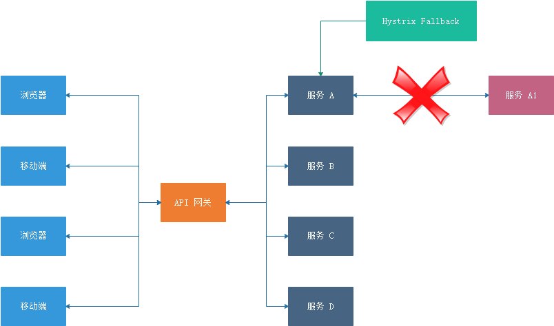

概述 Apache Dubbo (incubating) |ˈdʌbəʊ| 是一款高性能 、轻量级的开源 Java RPC 分布式服务框架 ，它提供了三大核心能力：面向接口的远程方法调用 ，智能容错和负载均衡 ，以及服务自动注册和发现 。她最大的特点是按照分层的方式来架构，使用这种方式可以使各个层之间解耦合（或者最大限度地松耦合）。从服务模型的角度来看，Dubbo 采用的是一种非常简单的模型，要么是提供方提供服务，要么是消费方消费服务，所以基于这一点可以抽象出服务提供方（Provider）和服务消费方（Consumer）两个角色。
Dubbo Admin管理控制台 管理控制台为内部裁剪版本，开源部分主要包含：路由规则，动态配置，服务降级，访问控制，权重调整，负载均衡，等管理功能。
GitHub：https://github.com/apache/incubator-dubbo-ops
克隆代码
git clone https://github.com/apache/dubbo-admin.git
修改配置文件
dubbo-admin-server/src/main/resources/application.properties
中的服务注册与发现中心的配置(我的zookeeper是3.4.14版本，集群)
**Build and Start **
1 2 3 4 5 6 7 8 9 mvn clean package -DskipTests cd dubbo-admin-distribution/targetjava -jar dubbo-admin-0.1.jar http://localhost:8080
遇到问题 NodeJS
1 2 3 4 5 # 安装 cnpm 命令行工具 npm install -g cnpm --registry=https://registry.npm.taobao.org # 安装模块 cnpm install [name]
两处 npm WARN
现象：使用mvn clean package构建 DubboAdmin 控制台时会出现npm install操作，此时还会出现两处警告，分别为
npm WARN optional SKIPPING OPTIONAL DEPENDENCY: fsevents@1.2.4 (node_modules\fsevents)npm WARN notsup SKIPPING OPTIONAL DEPENDENCY: Unsupported platform for fsevents@1.2.4: wanted {"os":"darwin","arch":"any"} (current: {"os":"win32","arch":"x64"})
解决：从警告说明中可以看出，fsevents 模块用于 {"os":"darwin","arch":"any"} Mac 系统，当前系统为 (current: {"os":"win32","arch":"x64"}) Windows 系统，不予理会即可
Dubbo应用程序
创建服务接口项目 创建一个名为 dubbo-service-user-api 的项目，该项目只负责定义接口
pom
1 2 3 4 5 6 7 8 9 10 11 12 13 14 15 16 17 18 19 20 21 22 <?xml version="1.0" encoding="UTF-8"?> <project xmlns ="http://maven.apache.org/POM/4.0.0" xmlns:xsi ="http://www.w3.org/2001/XMLSchema-instance" xsi:schemaLocation ="http://maven.apache.org/POM/4.0.0 https://maven.apache.org/xsd/maven-4.0.0.xsd" > <modelVersion > 4.0.0</modelVersion > <groupId > top.awslzhang</groupId > <artifactId > api</artifactId > <version > 0.0.1-SNAPSHOT</version > <name > api</name > <packaging > jar</packaging > <description > Demo project for Spring Boot</description > <properties > <project.build.sourceEncoding > UTF-8</project.build.sourceEncoding > <project.reporting.outputEncoding > UTF-8</project.reporting.outputEncoding > <java.version > 1.8</java.version > <maven.compiler.source > 1.8</maven.compiler.source > <maven.compiler.target > 1.8</maven.compiler.target > </properties > </project >
目录结构
安装到本地仓库
下面的两个项目需要依赖此jar，所以需要安装到本地仓库。
如果有条件的话，可以发布到自己的私服Nexus。并且在下面两个项目pom和maven配置中设置私服地址。
创建服务提供者项目 创建一个名为 dubbo-service-user-provider 的项目，该项目主要用于实现接口
这里要依赖上述接口jar，请注意接口pom的groupId、artifactId、version
1 2 3 4 5 6 7 8 9 10 11 12 13 14 15 16 17 18 19 20 21 22 23 24 25 26 27 28 29 30 31 32 33 34 35 36 37 38 39 40 41 42 43 44 45 46 47 48 49 50 51 52 53 54 55 56 57 58 59 60 61 62 63 64 65 66 67 68 69 70 71 72 73 74 75 76 77 78 79 <?xml version="1.0" encoding="UTF-8"?> <project xmlns ="http://maven.apache.org/POM/4.0.0" xmlns:xsi ="http://www.w3.org/2001/XMLSchema-instance" xsi:schemaLocation ="http://maven.apache.org/POM/4.0.0 https://maven.apache.org/xsd/maven-4.0.0.xsd" > <modelVersion > 4.0.0</modelVersion > <parent > <groupId > org.springframework.boot</groupId > <artifactId > spring-boot-starter-parent</artifactId > <version > 2.2.5.RELEASE</version > <relativePath /> </parent > <groupId > top.awslzhang</groupId > <artifactId > provider</artifactId > <version > 0.0.1-SNAPSHOT</version > <name > provider</name > <description > Demo project for Spring Boot</description > <properties > <project.build.sourceEncoding > UTF-8</project.build.sourceEncoding > <project.reporting.outputEncoding > UTF-8</project.reporting.outputEncoding > <java.version > 1.8</java.version > <maven.compiler.source > 1.8</maven.compiler.source > <maven.compiler.target > 1.8</maven.compiler.target > </properties > <dependencies > <dependency > <groupId > org.springframework.boot</groupId > <artifactId > spring-boot-starter</artifactId > </dependency > <dependency > <groupId > org.springframework.boot</groupId > <artifactId > spring-boot-starter-actuator</artifactId > </dependency > <dependency > <groupId > org.springframework.boot</groupId > <artifactId > spring-boot-starter-test</artifactId > <scope > test</scope > <exclusions > <exclusion > <groupId > org.junit.vintage</groupId > <artifactId > junit-vintage-engine</artifactId > </exclusion > </exclusions > </dependency > <dependency > <groupId > com.alibaba.boot</groupId > <artifactId > dubbo-spring-boot-starter</artifactId > <version > 0.2.0</version > </dependency > <dependency > <groupId > com.alibaba.boot</groupId > <artifactId > dubbo-spring-boot-actuator</artifactId > <version > 0.2.0</version > </dependency > <dependency > <groupId > top.awslzhang</groupId > <artifactId > api</artifactId > <version > 0.0.1-SNAPSHOT</version > </dependency > </dependencies > <build > <plugins > <plugin > <groupId > org.springframework.boot</groupId > <artifactId > spring-boot-maven-plugin</artifactId > </plugin > </plugins > </build > </project >
主要增加了以下依赖：
com.alibaba.boot:dubbo-spring-boot-starter:0.2.0：Dubbo Starter，0.2.0 版本支持 Spring Boot 2.x，是一个长期维护的版本。注：0.1.0 版本已经不推荐使用了，是个短期维护的版本，如果你还在用旧版，请大家尽快升级。com.alibaba.boot:dubbo-spring-boot-actuator:0.2.0：Dubbo 的服务状态检查top.awslzhang:api:1.0.0-SNAPSHOT：刚才创建的接口项目，如果无法依赖别忘记先 mvn clean install` 到本地仓库。
通过 @Service 注解实现服务提供方 1 2 3 4 5 6 7 8 9 10 11 12 13 package top.awslzhang.user.provider.impl;import com.alibaba.dubbo.config.annotation.Service;import top.awslzhang.api.service.UserService;@Service(version = "${user.service.version}") public class UserServiceImpl implements UserService @Override public String sayHi () return "Hello ,This is Provider!" ; } }
ps：请注意实现的接口为上个项目的接口、注解@Service包为com.alibaba.dubbo.config.annotation.Service;请不要搞错。
Application 上述 提到过Provider服务要运行在Container容器中
1 2 3 4 5 6 7 8 9 10 11 12 13 14 15 16 17 package top.awslzhang.user.provider;import com.alibaba.dubbo.container.Main;import org.springframework.boot.SpringApplication;import org.springframework.boot.autoconfigure.SpringBootApplication;@SpringBootApplication(exclude= {DataSourceAutoConfiguration.class}) public class ProviderApplication public static void main (String[] args) SpringApplication.run(ProviderApplication.class, args); Main.main(args); } }
application.yml 1 2 3 4 5 6 7 8 9 10 11 12 13 14 15 16 17 18 19 20 21 22 23 24 25 26 27 28 29 30 31 32 33 34 35 36 37 38 39 40 41 42 43 44 45 46 47 48 49 spring: application: name: dubbo-service-user-provider dubbo: application: id: dubbo-service-user-provider name: dubbo-service-user-provider qos-enable: true qos-port: 22222 registry: address: zookeeper://192.168.174.132:2181?backup=192.168.174.132:2182,192.168.174.132:2183 id: zookeeper protocol: port: 12345 name: dubbo id: dubbo status: server scan: basePackages: top.awslzhang.user.provider.impl user: service: version: 1.0 .0 management: endpoint: dubbo: enabled: true dubbo-shutdown: enabled: true dubbo-configs: enabled: true dubbo-services: enabled: true dubbo-references: enabled: true dubbo-properties: enabled: true health: dubbo: status: defaults: memory extras: load,threadpool
ps：需要十分注意上面的base-packages属性，虽然spring boot提示是这个，但其实不是，是basePackages
创建服务消费者项目 创建一个名为 dubbo-service-user-consumer 的项目，该项目用于消费接口（调用接口）
pom
1 2 3 4 5 6 7 8 9 10 11 12 13 14 15 16 17 18 19 20 21 22 23 24 25 26 27 28 29 30 31 32 33 34 35 36 37 38 39 40 41 42 43 44 45 46 47 48 49 50 51 52 53 54 55 56 57 58 59 60 61 62 63 64 65 66 67 68 69 70 71 72 73 74 75 <?xml version="1.0" encoding="UTF-8"?> <project xmlns ="http://maven.apache.org/POM/4.0.0" xmlns:xsi ="http://www.w3.org/2001/XMLSchema-instance" xsi:schemaLocation ="http://maven.apache.org/POM/4.0.0 https://maven.apache.org/xsd/maven-4.0.0.xsd" > <modelVersion > 4.0.0</modelVersion > <parent > <groupId > org.springframework.boot</groupId > <artifactId > spring-boot-starter-parent</artifactId > <version > 2.2.5.RELEASE</version > <relativePath /> </parent > <groupId > top.awslzhang</groupId > <artifactId > consumer</artifactId > <version > 0.0.1-SNAPSHOT</version > <name > consumer</name > <description > Demo project for Spring Boot</description > <properties > <java.version > 1.8</java.version > </properties > <dependencies > <dependency > <groupId > org.springframework.boot</groupId > <artifactId > spring-boot-starter-web</artifactId > </dependency > <dependency > <groupId > org.springframework.boot</groupId > <artifactId > spring-boot-starter-actuator</artifactId > </dependency > <dependency > <groupId > org.springframework.boot</groupId > <artifactId > spring-boot-starter-test</artifactId > <scope > test</scope > <exclusions > <exclusion > <groupId > org.junit.vintage</groupId > <artifactId > junit-vintage-engine</artifactId > </exclusion > </exclusions > </dependency > <dependency > <groupId > com.alibaba.boot</groupId > <artifactId > dubbo-spring-boot-starter</artifactId > <version > 0.2.0</version > </dependency > <dependency > <groupId > com.alibaba.boot</groupId > <artifactId > dubbo-spring-boot-actuator</artifactId > <version > 0.2.0</version > </dependency > <dependency > <groupId > top.awslzhang</groupId > <artifactId > api</artifactId > <version > 0.0.1-SNAPSHOT</version > </dependency > </dependencies > <build > <plugins > <plugin > <groupId > org.springframework.boot</groupId > <artifactId > spring-boot-maven-plugin</artifactId > </plugin > </plugins > </build > </project >
通过 @Reference 注入 UserService 1 2 3 4 5 6 7 8 9 10 11 12 13 14 15 16 17 18 19 package top.awslzhang.user.consumer.controller;import com.alibaba.dubbo.config.annotation.Reference;import org.springframework.web.bind.annotation.RequestMapping;import org.springframework.web.bind.annotation.RestController;import top.awslzhang.api.service.UserService;@RestController public class UserController @Reference private UserService userService; @RequestMapping("hi") public String hi () return userService.sayHi(); } }
application.yml 1 2 3 4 5 6 7 8 9 10 11 12 13 14 15 16 17 18 19 20 21 22 23 24 25 26 27 28 29 30 31 32 33 34 35 36 37 38 39 40 41 42 43 44 45 46 47 48 49 50 51 52 53 54 55 56 57 58 59 60 spring: application: name: dubbo-service-user-consumer server: port: 9090 user: service: version: 1.0 .0 dubbo: scan: basePackages: top.awslzhang.user.consumer.controller application: id: dubbo-service-user-consumer name: dubbo-service-user-consumer registry: id: zookeeper address: zookeeper://192.168.174.132:2181?backup=192.168.174.132:2182,192.168.174.132:2183 endpoints: dubbo: enabled: true management: server: port: 9091 health: dubbo: status: defaults: memory endpoint: dubbo: enabled: true dubbo-shutdown: enabled: true dubbo-configs: enabled: true dubbo-services: enabled: true dubbo-references: enabled: true dubbo-properties: enabled: true endpoints: web: exposure: include: "*"
创建API GATEWAY/服务聚合 这里只有实现，点击这里查看原理
API项目 在dubbo-service-user-api中加入一个接口
接口：
1 2 3 4 5 package top.awslzhang.myshop.api.controller;public interface RouterService void info () }
服务消费端 在 dubbo-service-user-provider项目中修改
pom中依赖dubbo-service-user-api
yml
因为这个消费者变成了服务聚合的提供者，所以修改它为服务提供者(注意端口不要和其他项目重复)
加入：
1 2 3 4 5 6 7 dubbo: protocol: id: dubbo name: dubbo port: 30880 status: server serialization: kryo
Application
因为这个消费者变成了服务聚合的提供者，所以修改它为服务提供者
1 2 3 4 5 6 7 8 9 10 @SpringBootApplication(exclude= {DataSourceAutoConfiguration.class}) @EnableHystrix public class ConsumerApplication public static void main (String[] args) SpringApplication.run(ConsumerApplication.class, args); Main.main(args); } }
实现API项目接口
1 2 3 4 5 6 7 @Service(version = "${mydubbo.user.version}") public class RouterServiceImpl implements RouterService @Override public void info () } }
ps：还需要配置dubbo: scan: basePackages: xxx，使项目能扫描到@service和@control注解
服务聚合消费端 创建myshop-api-webadmin
pom
1 2 3 4 5 6 7 8 9 10 11 12 13 14 15 16 17 18 19 20 21 22 23 24 25 26 27 28 29 30 31 32 33 34 35 36 37 38 39 40 41 42 43 44 45 46 47 48 49 50 51 52 53 54 55 56 57 58 59 60 61 62 63 64 65 66 67 68 69 70 71 72 73 74 75 76 77 78 <?xml version="1.0" encoding="UTF-8"?> <project xmlns ="http://maven.apache.org/POM/4.0.0" xmlns:xsi ="http://www.w3.org/2001/XMLSchema-instance" xsi:schemaLocation ="http://maven.apache.org/POM/4.0.0 https://maven.apache.org/xsd/maven-4.0.0.xsd" > <modelVersion > 4.0.0</modelVersion > <parent > <groupId > top.awslzhang</groupId > <artifactId > myshop-dependencies</artifactId > <version > 1.0.0-SNAPSHOT</version > <relativePath > ../myshop-dependencies/pom.xml</relativePath > </parent > <artifactId > consumer</artifactId > <name > consumer</name > <description > 用户服务消费者</description > <packaging > jar</packaging > <dependencies > <dependency > <groupId > org.springframework.boot</groupId > <artifactId > spring-boot-starter-web</artifactId > </dependency > <dependency > <groupId > org.springframework.boot</groupId > <artifactId > spring-boot-starter-test</artifactId > <scope > test</scope > </dependency > <dependency > <groupId > junit</groupId > <artifactId > junit</artifactId > <scope > test</scope > </dependency > <dependency > <groupId > org.junit.jupiter</groupId > <artifactId > junit-jupiter</artifactId > <version > RELEASE</version > <scope > test</scope > </dependency > <dependency > <groupId > top.awslzhang</groupId > <artifactId > myshop-commons-dubbo</artifactId > <version > ${project.parent.version}</version > </dependency > <dependency > <groupId > top.awslzhang</groupId > <artifactId > service-user-api</artifactId > <version > ${project.parent.version}</version > </dependency > <dependency > <groupId > top.awslzhang</groupId > <artifactId > myshop-static-backend</artifactId > <version > ${project.parent.version}</version > </dependency > </dependencies > <build > <plugins > <plugin > <groupId > org.springframework.boot</groupId > <artifactId > spring-boot-maven-plugin</artifactId > </plugin > </plugins > </build > </project >
yml
1 2 3 4 5 6 7 8 9 10 11 12 13 14 15 16 17 18 19 20 21 22 23 24 25 26 27 28 29 30 31 32 33 34 35 36 37 38 39 40 41 42 43 44 45 46 47 48 49 50 51 52 53 54 55 56 57 58 59 60 61 62 mydubbo: user: version: 1.0 .0 versions: user: v1: 1.0 .0 spring: application: name: myshop-api-webadmin server: port: 9000 dubbo: scan: basePackages: top.awslzhang.myshop.api.webadmin application: id: myshop-api-webadmin name: myshop-api-webadmin registry: id: zookeeper address: zookeeper://192.168.174.134:2181?backup=192.168.174.134:2182,192.168.174.134:2183 protocol: id: dubbo name: dubbo serialization: kryo endpoints: dubbo: enabled: true management: server: port: 9092 health: dubbo: status: defaults: memory endpoint: dubbo: enabled: true dubbo-shutdown: enabled: true dubbo-configs: enabled: true dubbo-services: enabled: true dubbo-references: enabled: true dubbo-properties: enabled: true endpoints: web: exposure: include: "*"
跳转方法
1 2 3 4 5 6 7 8 9 10 11 12 13 14 15 16 17 18 19 20 21 22 23 24 25 @Controller @RequestMapping("/router") public class controller @Reference(version = "${mydubbo.user.version}") private RouterService routerService; @Value("${mydubbo.user.port}") private String userPort; @RequestMapping(value = "user", method = RequestMethod.GET) public String userService (String path) routerService.info(); boolean isConsumerSide = RpcContext.getContext().isConsumerSide(); if (isConsumerSide){ String serverIP = RpcContext.getContext().getRemoteHost(); return String.format("redirect:http://%s:%s%s" , serverIP, userPort, path); } return null ; } }
启动 Dubbo Admin 控制台 查看是否成功注册服务，效果图如下：
Dubbo的负载均衡 点击这里查看Duboo负载均衡
在集群负载均衡时，Dubbo 提供了多种均衡策略，缺省为 random 随机调用。
配置 服务提供者 1 2 3 dubbo: provider: loadbalance: roundrobin
客户端 1 2 3 dubbo: consumer: loadbalance: roundrobin
验证 在服务者代码中打印出本个服务是哪个端口，用于鉴别服务端负载均衡
1 2 3 4 5 6 7 8 9 10 11 12 @Service(version = "${user.service.version}") public class UserServiceImpl implements UserService @Value("${dubbo.protocol.port}") private String port; @Override public String sayHi () return "Hello ,This is Provider! Consumer Post is ： " +port; } }
修改端口号并分别启动多个服务提供者，此时访问服务消费者：http://localhost:9090/hi
如下开启
浏览器会交替显示：
1 2 Hello ,This is Provider! Consumer Post is ： 12345 Hello ,This is Provider! Consumer Post is ： 12346
附：在 IDEA 中配置一个工程启动多个实例
版本为2019.3.3
勾选红色区域即可
通过修改 application.yml 配置文件的 dubbo.protocol.port 的端口，启动多个实例，需要多个端口，分别进行启动即可。
Dubbo + Kryo高速序列化 点击这里查看Dubbo + Kryo告诉序列化
启用Kryo 在 Provider 和 Consumer 项目启用 Kryo 高速序列化功能，两个项目的配置方式相同
增加 Kryo 依赖 1 2 3 4 5 <dependency > <groupId > de.javakaffee</groupId > <artifactId > kryo-serializers</artifactId > <version > 0.42</version > </dependency >
添加配置yml 1 2 3 4 dubbo: protocol: serialization: kryo optimizer: top.awslzhang.user.provider.kryo.SerializationOptimizerImpl
注册被序列化类
可有可无，可以对自己项目中需要被序列化的类来注册，不注册也没什么问题
要让 Kryo 和 FST 完全发挥出高性能，最好将那些需要被序列化的类注册到 dubbo 系统中，例如，我们可以实现如下回调接口：
1 2 3 4 5 6 7 public class SerializationOptimizerImpl implements SerializationOptimizer public Collection<Class> getSerializableClasses () List<Class> classes = new LinkedList<Class>(); classes.add(User.class); return classes; } }
在注册这些类后，序列化的性能可能被大大提升，特别针对小数量的嵌套对象的时候。
当然，在对一个类做序列化的时候，可能还级联引用到很多类，比如 Java 集合类。针对这种情况，我们已经自动将 JDK 中的常用类进行了注册，所以你不需要重复注册它们（当然你重复注册了也没有任何影响），包括：
1 2 3 4 5 6 7 8 9 10 11 12 13 14 15 16 17 18 19 20 21 22 23 24 25 26 27 28 29 30 GregorianCalendar InvocationHandler BigDecimal BigInteger Pattern BitSet URI UUID HashMap ArrayList LinkedList HashSet TreeSet Hashtable Date Calendar ConcurrentHashMap SimpleDateFormat Vector BitSet StringBuffer StringBuilder Object Object[] String[] byte[] char[] int[] float[] double[]
由于注册被序列化的类仅仅是出于性能优化的目的，所以即使你忘记注册某些类也没有关系。事实上，即使不注册任何类，Kryo 和 FST 的性能依然普遍优于 hessian 和 dubbo 序列化。
注意 无参构造函数和 Serializable 接口
如果被序列化的类中 不包含无参的构造函数，则在 Kryo 的序列化中，性能将会大打折扣 ，因为此时我们在底层将用 Java 的序列化来透明的取代 Kryo 序列化。所以，尽可能为每一个被序列化的类添加无参构造函数是一种最佳实践（当然一个 Java 类如果不自定义构造函数，默认就有无参构造函数）。
另外，Kryo 和 FST 都不需要被序列化类实现 Serializable 接口，但我们还是建议每个被序列化类都去实现 Serializable 接口，因为这样可以保持和 Java 序列化以及 dubbo 序列化的兼容性 ，另外也使我们未来采用上述某些自动注册机制带来可能。
测试kryo 如何测试kryo是否生效，简单，我们Provider和Consumer两者，一个实现序列化一个不实现，如果有报错，就证明运用成功。
Dubbo + Hystrix 实现服务熔断 通过Hystrix 实现微服务的四大问题之一：服务挂了如何解决
在微服务架构中，根据业务来拆分成一个个的服务，服务与服务之间可以通过 RPC 相互调用。为了保证其高可用，单个服务通常会集群部署。由于网络原因或者自身的原因，服务并不能保证 100% 可用，如果单个服务出现问题，调用这个服务就会出现线程阻塞，此时若有大量的请求涌入，Servlet 容器的线程资源会被消耗完毕，导致服务瘫痪。服务与服务之间的依赖性，故障会传播，会对整个微服务系统造成灾难性的严重后果，这就是服务故障的 “雪崩” 效应。
为了解决这个问题，业界提出了熔断器模型。
Netflix 开源了 Hystrix 组件，实现了熔断器模式，Spring Cloud 对这一组件进行了整合。在微服务架构中，一个请求需要调用多个服务是非常常见的，如下图：
较底层的服务如果出现故障，会导致连锁故障。当对特定的服务的调用的不可用达到一个阀值（Hystrix 是 5 秒 20 次 ） 熔断器将会被打开。

熔断器打开后，为了避免连锁故障，通过 fallback 方法可以直接返回一个固定值。
设置 Provider pom依赖
1 2 3 4 5 <dependency > <groupId > org.springframework.cloud</groupId > <artifactId > spring-cloud-starter-netflix-hystrix</artifactId > <version > 2.0.1.RELEASE</version > </dependency >
在 Application 中增加 @EnableHystrix 注解
1 2 3 4 5 6 7 8 @EnableHystrix @SpringBootApplication public class xxx public static void main (String[] args) SpringApplication.run(xxx.class, args); Main.main(args); } }
在 Service 中增加 @HystrixCommand 注解
1 2 3 4 5 6 7 8 9 10 11 12 13 14 15 16 17 18 19 @Service(version = "${user.service.version}") public class UserServiceImpl implements UserService @Value("${dubbo.protocol.port}") private String port; @HystrixCommand(commandProperties = { @HystrixProperty(name = "circuitBreaker.requestVolumeThreshold", value = "10"), // 尝试次数 @HystrixProperty(name = "execution.isolation.thread.timeoutInMilliseconds", value = "2000") // 超时时间 }) @Override public String sayHi () throw new RuntimeException("Exception to show hystrix enabled." ); } }
熔断方法必须和原方法相同参数！
测试熔断器
此时我们再次请求服务提供者，浏览器会报 500 异常
Exception to show hystrix enabled.
Consumer pom依赖
1 2 3 4 5 <dependency > <groupId > org.springframework.cloud</groupId > <artifactId > spring-cloud-starter-netflix-hystrix</artifactId > <version > 2.0.1.RELEASE</version > </dependency >
在 Application 中增加 @EnableHystrix 注解
1 2 3 4 5 6 7 8 @EnableHystrix @SpringBootApplication public class xxx public static void main (String[] args) SpringApplication.run(xxx.class, args); Main.main(args); } }
在调用方法上增加 @HystrixCommand 注解，并指定 fallbackMethod 方法
1 2 3 4 5 6 7 8 9 10 11 12 13 14 15 16 17 @RestController public class UserController @Reference(version = "${user.service.version}") private UserService userService; @HystrixCommand(fallbackMethod = "hiError") @RequestMapping(value = "/hi") public String hi () System.out.println("123" ); return userService.sayHi(); } public String hiError () return "Hystrix fallback" ; } }
测试
此时我们再次请求服务提供者，浏览器会显示：
Hystrix fallback
至此，Dubbo + Hystrix 配置完成
Dubbo + Hystrix 熔断器仪表盘 监控熔断器的界面
使用熔断器仪表盘监控 在 Provider 和 Consumer 项目增加 Hystrix 仪表盘功能，两个项目的改造方式相同
pom依赖
1 2 3 4 5 <dependency> <groupId>org.springframework.cloud</groupId> <artifactId>spring-cloud-starter-netflix-hystrix-dashboard</artifactId> <version>2.0.1.RELEASE</version> </dependency>
在 Application 中增加 @EnableHystrixDashboard 注解
@EnableHystrixDashboard
创建 hystrix.stream 的 Servlet 配置
Spring Boot 2.x 版本开启 Hystrix Dashboard 与 Spring Boot 1.x 的方式略有不同，需要增加一个 HystrixMetricsStreamServlet 的配置，代码如下：
1 2 3 4 5 6 7 8 9 10 11 12 @Configuration public class HystrixDashboardConfiguration @Bean public ServletRegistrationBean getServlet () HystrixMetricsStreamServlet streamServlet = new HystrixMetricsStreamServlet(); ServletRegistrationBean registrationBean = new ServletRegistrationBean(streamServlet); registrationBean.setLoadOnStartup(1 ); registrationBean.addUrlMappings("/hystrix.stream" ); registrationBean.setName("HystrixMetricsStreamServlet" ); return registrationBean; } }
测试 Hystrix Dashboard 浏览器端访问 http://localhost:9090/hystrix 界面如下：
点击 Monitor Stream，进入下一个界面，访问 http://localhost:9090/hi 触发熔断后，监控界面显示效果如下：
附：Hystrix 说明 什么情况下会触发 fallback 方法
名字
描述
触发fallback
EMIT
值传递
NO
SUCCESS
执行完成，没有错误
NO
FAILURE
执行抛出异常
YES
TIMEOUT
执行开始，但没有在允许的时间内完成
YES
BAD_REQUEST
执行抛出HystrixBadRequestException
NO
SHORT_CIRCUITED
断路器打开，不尝试执行
YES
THREAD_POOL_REJECTED
线程池拒绝，不尝试执行
YES
SEMAPHORE_REJECTED
信号量拒绝，不尝试执行
YES
Hystrix Dashboard 界面监控参数
引用 Dubbo Admin管理控制台
Dubbo Spring Boot 工程